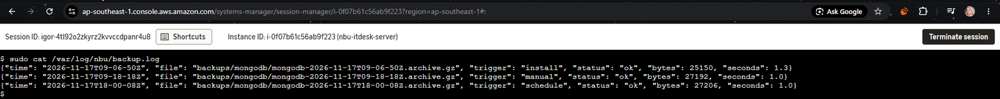
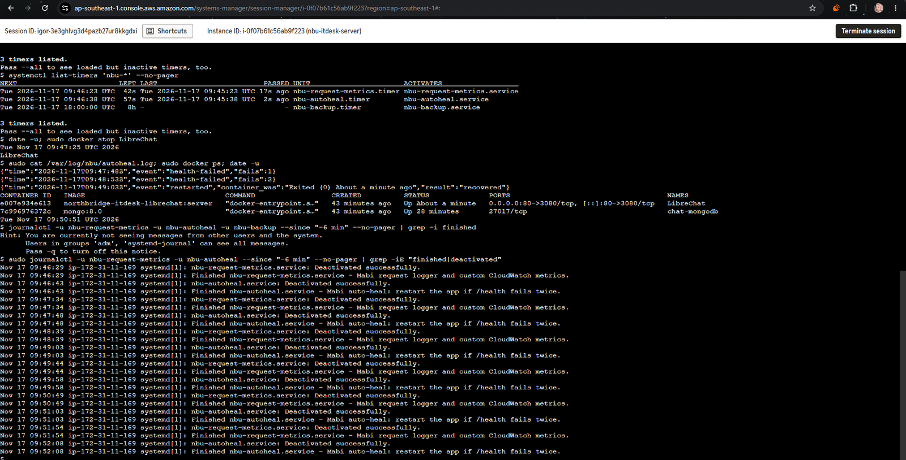
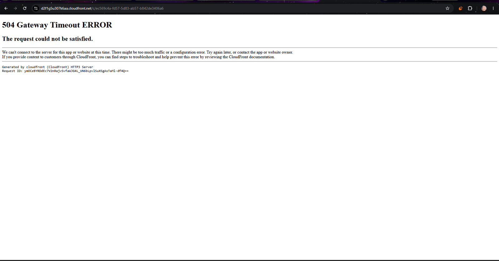
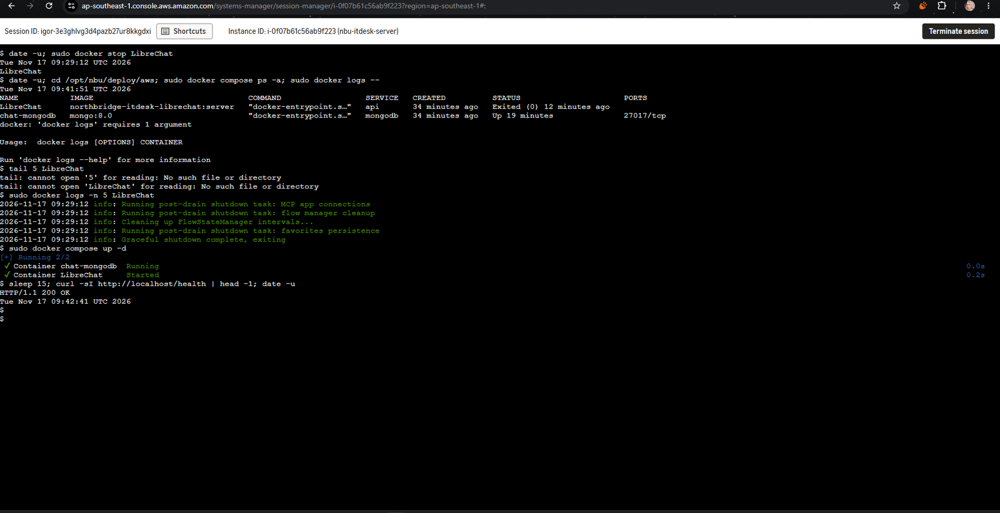
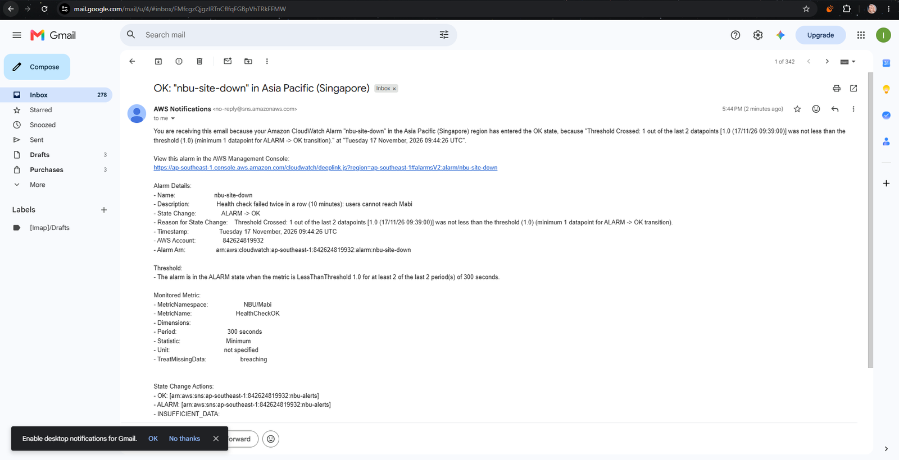
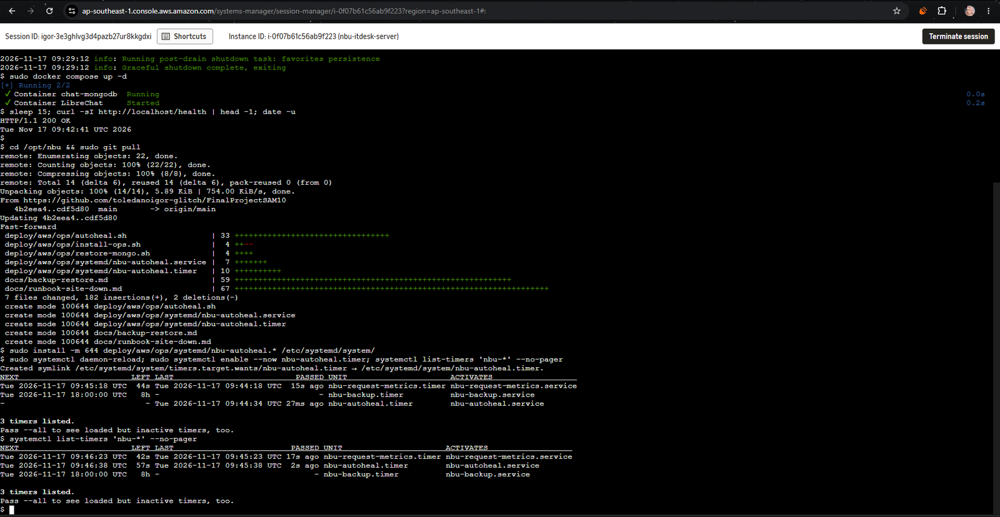
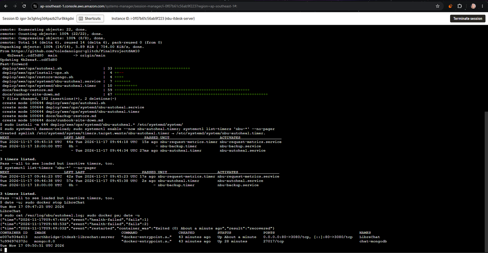

Automation, and the incident
Automations that run on their own
| Automation | Runs | What it does | Code |
|---|---|---|---|
Health check (Lambda nbu-healthcheck) | Every 5 min, EventBridge | Visits the public /health through CloudFront and publishes HealthCheckOK and latency; feeds nbu-site-down | deploy/aws/ops/healthcheck_lambda.py |
| Request logger (systemd timer) | Every 1 min | Logs every new question with outcome, duration and version; publishes 7 custom metrics | deploy/aws/ops/request_metrics.py |
| Nightly backup (systemd timer) | 02:00 Manila (18:00 UTC); first unattended run 2026-11-17 18:00:08 UTC, ok | mongodump → S3, logs the result, publishes BackupSuccess | deploy/aws/ops/backup_mongo.py |
| Auto-heal (systemd timer, added after incident 001) | Every 1 min | If /health fails twice in a row, starts the containers again | deploy/aws/ops/autoheal.sh |
All of it is installed by install-ops.sh and create-aws-monitoring.sh from the repository; the README explains how to deploy them.


Incident 001: Mabi site down (container stopped)
Date: 2026-11-17 · Severity: whole service down · Status: resolved; prevention in place and tested. The fault was created on purpose (the brief allows this) to test whether monitoring would catch it and whether the runbook works.
Timeline (UTC; Manila is UTC+8)
- Fault: LibreChat container stopped (
docker stop LibreChat); logs end withGraceful shutdown complete, exiting - Users get
504 Gateway Timeout ERRORfrom CloudFront - Second failed health check in a row (periods 09:29 and 09:34)
- Alarm nbu-site-down → ALARM, email received
- Admin follows the runbook:
docker compose ps -a→LibreChat Exited (0) 12 minutes ago, MongoDB still up docker logs -n 5 LibreChat: clean shutdown, no crash →docker compose up -dcurl /health→ HTTP/1.1 200 OK. Fixed- Alarm back to OK, OK email received



Root cause
The app container received a stop signal and exited cleanly (exit code 0), the same as an admin stopping it by mistake or an update leaving it stopped. It stayed down because Docker's restart: always deliberately does not restart a container that was stopped with docker stop (it only covers crashes and reboots), and nothing on the server checked whether the app was answering. The only check was the external health check, which is designed to alert a human after 2 failures 5 minutes apart. So the site stayed down until a person read the email and logged in.
Chain: container stopped → restart policy does not apply to a manual stop → no local watchdog → only an email to a human → 13½ minutes of 504s.
Prevention: auto-heal, and proof it works
New automation autoheal.sh, run every minute: it checks http://localhost/health on the server; after 2 failures in a row (so one slow answer does not trigger it) it runs docker compose up -d and logs the result to /var/log/nbu/autoheal.log. It pauses while a restore is running so it never fights planned maintenance. The CloudWatch alarm stays as the second line: if a restart does not fix it, a human is still emailed.
Then I repeated exactly the same fault:
docker stop LibreChat(same fault again)- auto-heal: health-failed, fails 1
- auto-heal: health-failed, fails 2 → restart
- restarted, container_was "Exited (0) About a minute ago", result recovered (no human, alarm never fired)


Lessons: restart: always is not a watchdog. A local check that acts beats an alert that waits for a person, and the alarm should be for problems a restart cannot fix. Pasting long commands into Session Manager can cut them (--tail broke), so the runbook now uses short, one-line commands.
Two earlier real faults during the build (no monitoring existed yet, so no timings): an EACCES crash loop because the app runs as uid 1000 but Docker created its log folder as root (fixed: the start script now sets owners); and "Deployment config unavailable" because the generated config was mode 600 (fixed: the start script sets 644). Both are rows in the runbook's diagnosis table.
RUNBOOK: Mabi site is down (alarm nbu-site-down)
Owner: Igor Toledano · Last tested: 2026-11-17 (incident 001) · Takes: about 5 minutes · Ask: Igor Toledano
1. What this is for
Getting the Mabi chat site back when users get an error page instead of the chat.
2. How you know you need it
Email ALARM: "nbu-site-down" (2 failed health checks, 5 minutes apart), or a user reports 504 Gateway Timeout ERROR. Normally auto-heal fixes a stopped app within about 2 minutes, so if you got this email a restart was not enough. Look carefully.
Command that shows the problem (EC2 → nbu-itdesk-server → Connect → Session Manager), one line at a time:
date -u; cd /opt/nbu/deploy/aws; sudo docker compose ps -a
sudo docker logs -n 5 LibreChat
sudo tail -5 /var/log/nbu/autoheal.log; df -h / ; free -m3. What it affects
Everyone: no student or staff member can open Mabi. Saved chats are safe in MongoDB.
4. How to do it
Step 1. CloudWatch → Alarms: is nbu-status-check-failed also red? → Yes: EC2 → Instance state → Reboot, wait 3 minutes, go to 5 (Docker starts both containers itself). No: step 2.
Step 2. Read the output of the commands above and match it:
| You see | Cause | Do |
|---|---|---|
| LibreChat Exited, logs end normally | Container stopped | Step 3 |
LibreChat Restarting, logs show EACCES … /app/logs | Folder owner wrong (app is uid 1000) | Step 4 |
Logs show Deployment config unavailable | Generated config not readable | Step 4 |
Disk Use% at 100% | Logs, backups or images filled the disk | Step 5, then 3 |
autoheal.log says still-down | App crashes on start | Step 4 |
Step 3. Start it again. → you should see HTTP/1.1 200 OK.
sudo docker compose up -d
sleep 15; curl -sI http://localhost/health | head -1; date -uStep 4. Rebuild config and fix owners. → both containers Started; then the curl line from step 3.
sudo bash /opt/nbu/deploy/aws/start-mabi.shStep 5. Free disk space. → df -h / well under 85%.
sudo du -xh / --max-depth=2 | sort -h | tail -15
sudo docker system prune -f5. How to check it worked
- ☐
curl -sI http://localhost/healthgives 200 OK, and the site loads in a private window - ☐ Log in and ask "What time is the IT Desk open on Saturday?" → "8:00 AM to 12:00 NN"
- ☐ OK: "nbu-site-down" email arrives, and no new alarms for 10 minutes
6. How to undo it
Steps 3 and 4 only start things. If start-mabi.sh broke the config: cd /opt/nbu && git log --oneline -3, git checkout <last good commit>, run it again. docker system prune only removes stopped containers and unused images; start-mabi.sh rebuilds the app image.
7. Gotchas
docker stopbeatsrestart: always. That is why auto-heal exists.- The alarm takes about 10 minutes on purpose. If a user already told you, do not wait for the email.
- A CloudFront 504 means the server behind it is not answering, not that CloudFront is broken.
- Everything in the app container runs as uid 1000; folders created by root crash it.
- Long commands pasted into Session Manager can be cut. Paste one short line at a time.
8. Change history
2026-11-17: written; tested in incident 001 (manual fix 3 min 15 s after the alert); auto-heal added and tested (1 min 38 s, no human); diagnosis table includes the two build faults.